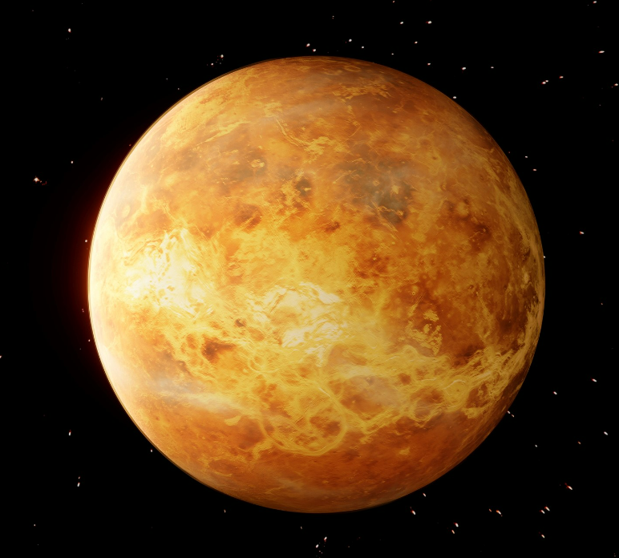

The planet Venus is the second planet in our solar system. It is considered the hottest planet in our solar system. Unlike Mercury, it has a thick atmosphere full of carbon dioxide. It also has clouds of sulfuric acid. Its thick atmosphere traps heat, making its surface extremely hot. Just to give you an idea of how hot it is on Venus, rockets made out of lead metal would melt quickly on Venus' surface.
Sometimes, this planet is called Earth's twin. This is because they are similar in size and structure. Despite this common misperception, they are actually very different in other ways. For example, Venus rotates in the opposite way that Earth and most other planets do. It also has an unusually slow rotation, even slower than Mercury. This makes it so that a day in Venus is longer than a day in Earth.